SH
Sofian Halim
President Director
Lihat profil
Tulis riwayat pendidikan dan karier di sini.
Beranda / Tentang kami / Profil perusahaan
PT Murinda Sentra Baja memproduksi komponen alat berat dan struktur baja dengan kualitas tanpa kompromi, dan menyerahkannya tepat waktu sesuai target pelanggan.
Minta penawaranLihat layananPT Murinda Sentra Baja adalah kontraktor umum yang mendalami fabrikasi dan manufaktur komponen alat berat, didukung fasilitas plant terintegrasi dan sumber daya manusia yang kompeten.
Fokus kami adalah counterweight excavator, bucket excavator, dan berbagai komponen dump truck. Kapasitas produksi ditunjang mesin las SAW, mesin potong CNC, mesin milling, fasilitas blasting otomatis dan manual, serta paint booth berstandar tinggi.
Kami terus meningkatkan efisiensi operasional melalui ISO 9001, investasi pada kompetensi tim, dan kepatuhan penuh terhadap standar keselamatan kerja.

Menjadi perusahaan manufaktur komponen alat berat dan struktur baja yang unggul dalam kualitas produk, inovasi, dan pelayanan bagi pasar nasional dan internasional.
Layanan fabrikasi dan manufaktur terintegrasi, dari pemrosesan material sampai penyelesaian akhir, dengan pengawasan mutu yang ketat.
Produksi skala besar dan presisi untuk komponen vital: counterweight excavator, bucket excavator, dan suku cadang pendukung dump truck.
Fabrikasi baja struktural berkekuatan tinggi, dirancang sesuai spesifikasi proyek konstruksi, manufaktur industri, pertambangan, dan infrastruktur.
Pemotongan dan pembentukan material tingkat lanjut dengan mesin potong CNC, mesin milling, dan pengelasan SAW (Submerged Arc Welding) untuk akurasi dan ketahanan sambungan.
Sistem ERP buatan sendiri mengintegrasikan administrasi, persetujuan digital, pelacakan produksi dari bahan mentah sampai barang siap kirim, jadwal pengiriman, dan dokumen pengiriman otomatis.
Pengujian berlapis: Non-Destructive Testing (NDT), inspeksi pengelasan, dan verifikasi ketebalan cat, diawasi real-time lewat ERP sesuai ISO 9001.
Area kerja dan mesin utama di plant Kalijati, dari pemotongan dan pengelasan sampai penyelesaian akhir.


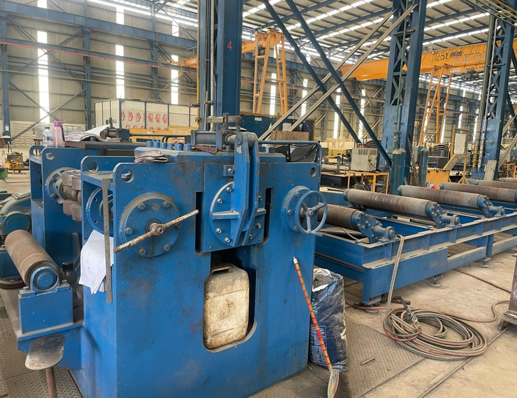
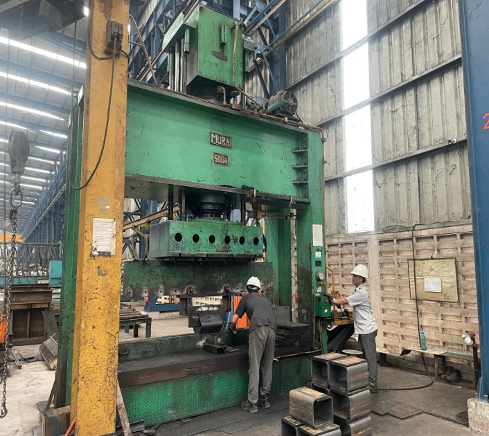
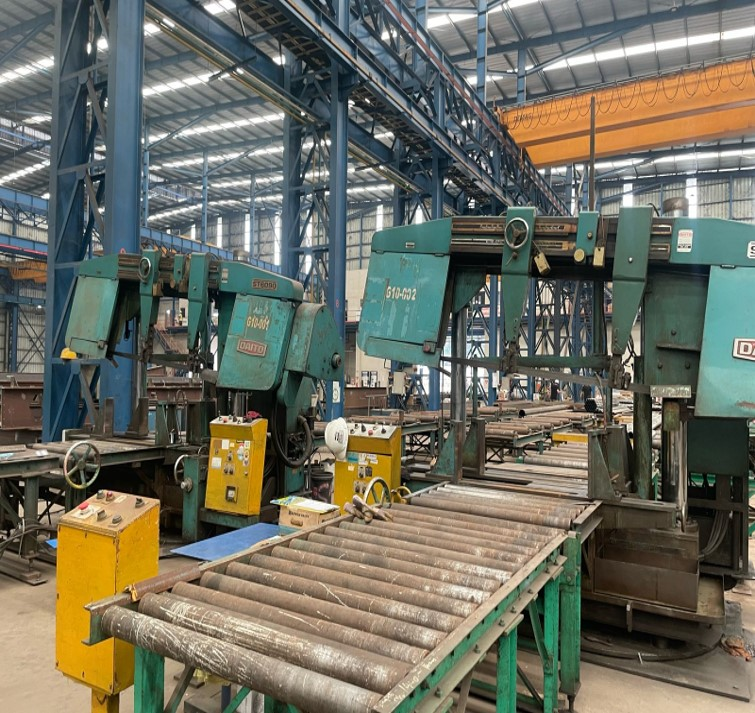
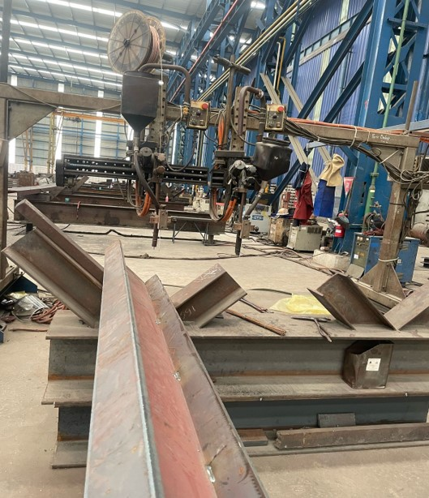
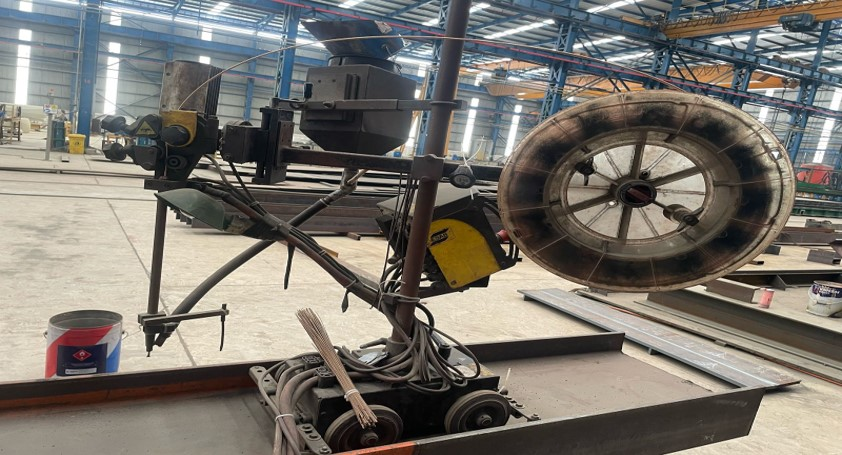
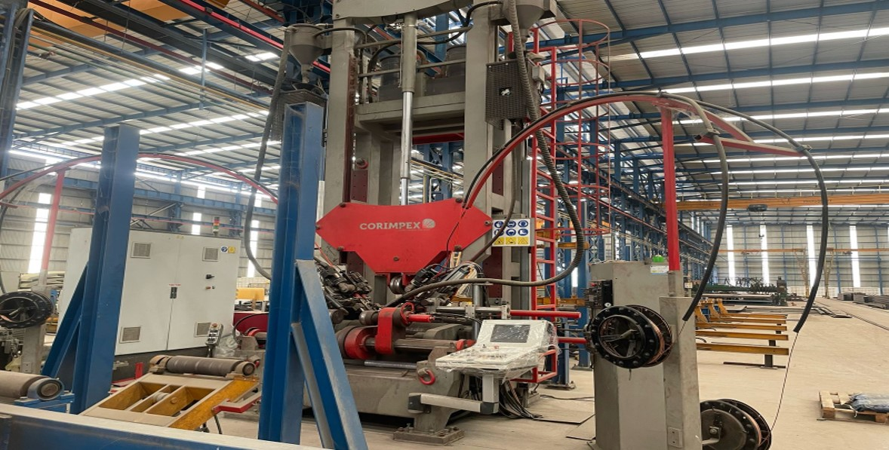
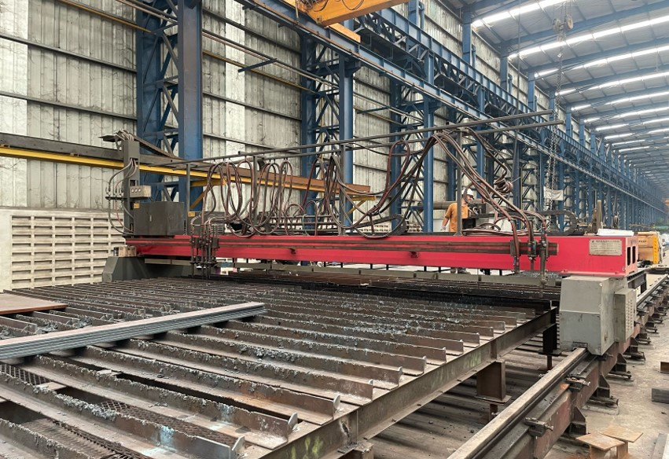
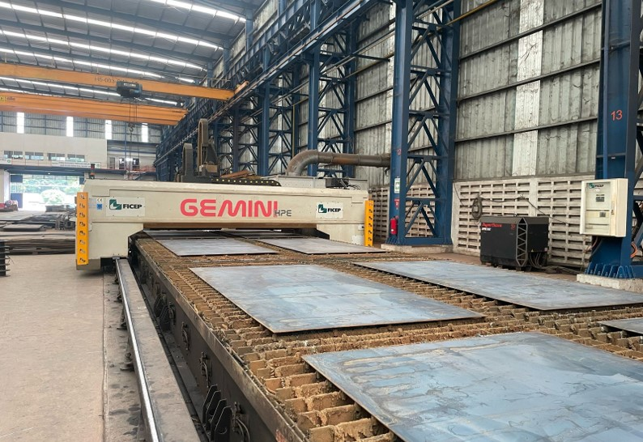
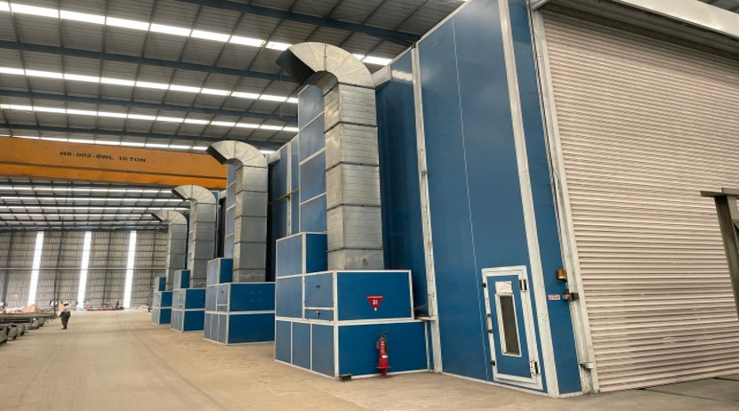
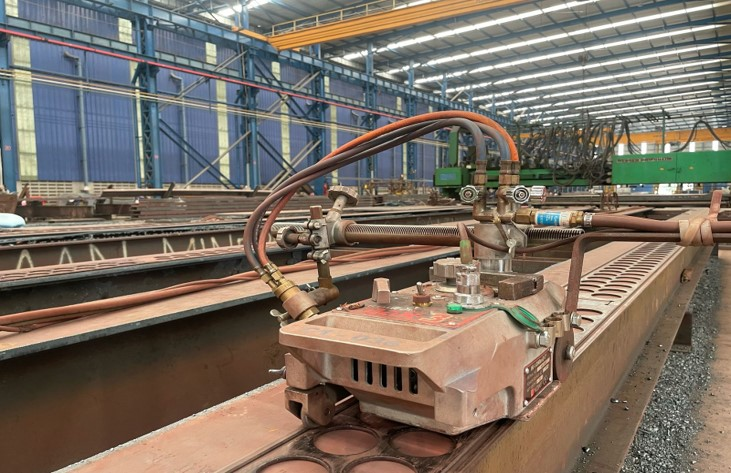
Jajaran manajemen dan tenaga profesional yang memadukan keahlian strategis, rekayasa teknik, dan pengawasan mutu.
President Director
Tulis riwayat pendidikan dan karier di sini.
Director
Tulis riwayat pendidikan dan karier di sini.
General Manager
Tulis riwayat pendidikan dan karier di sini.
Engineer
Tulis riwayat pendidikan dan karier di sini.
QC Manager
Tulis riwayat pendidikan dan karier di sini.
Production Manager
Tulis riwayat pendidikan dan karier di sini.
Mitra manufaktur dan fabrikasi bagi perusahaan nasional dan multinasional.
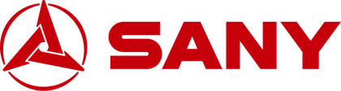
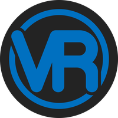
Jawaban singkat seputar produk, mutu, dan cara bekerja sama.
Fokus kami adalah counterweight excavator, bucket excavator, dan berbagai komponen dump truck, ditambah fabrikasi baja struktural untuk proyek konstruksi, industri, pertambangan, dan infrastruktur.
Ya. Kami menerapkan Sistem Manajemen Mutu ISO 9001 di seluruh lini departemen, dan proses inspeksi diawasi real-time lewat ERP terintegrasi.
Pengujian berlapis yang mencakup Non-Destructive Testing (NDT), inspeksi pengelasan, dan verifikasi ketebalan cat.
Setiap tahap, dari penerimaan material mentah sampai barang jadi, dapat dipantau lewat ERP kami. Jadwal dan status pengiriman juga tersedia, lengkap dengan dokumen pengiriman otomatis.
Hubungi tim kami lewat plant@murinda.com atau telepon workshop di (+62260) 7495467. Plant kami berada di Kalijati, Subang, dekat Exit Tol Kalijati.
Diskusikan kebutuhan fabrikasi, minta penawaran harga, atau jadwalkan kunjungan ke plant kami.
15 Fl, Permata Kuningan Building, Jalan Kuningan Mulia Kav. 9C, Jakarta 12980
Jl. Raya Kalijati Purwadadi No. 123A RT 006/02, Desa Kalijati Barat, Kecamatan Kalijati, Kabupaten Subang, Jawa Barat 41271 (Exit Tol Kalijati)
Jl. Raya Kalijati Purwadadi No. 123A, Desa Kalijati Barat, Kecamatan Kalijati, Kabupaten Subang, dekat Exit Tol Kalijati.